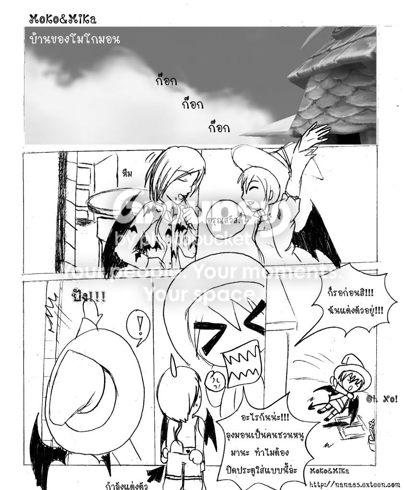
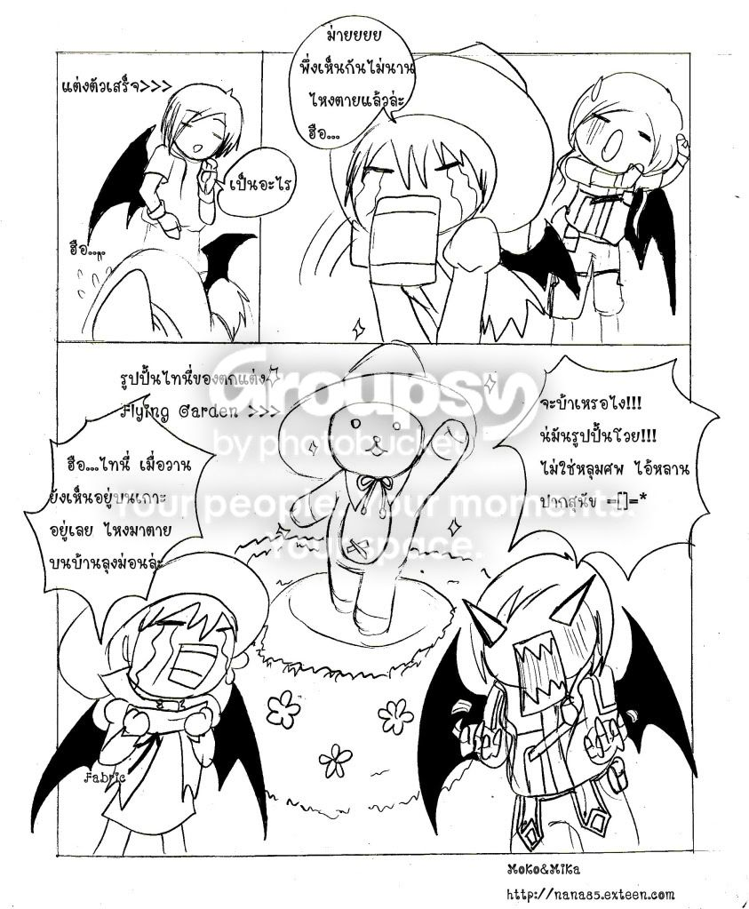
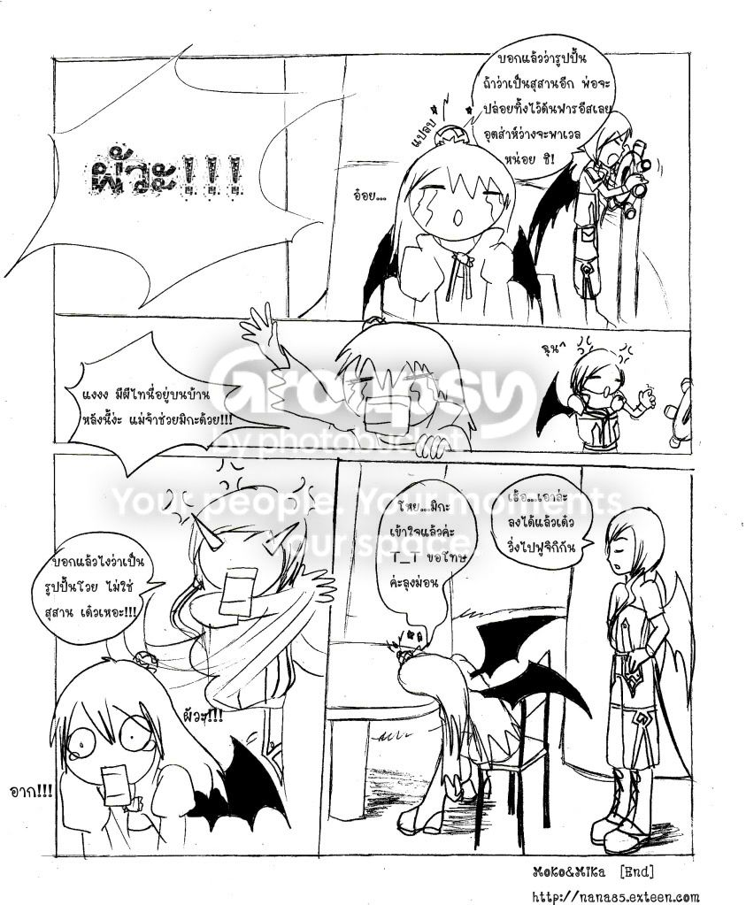

[Comic] Moko&Mika สุสานไทนี่!?
สวัสดีค่ะ ไม่เจอกันนานเลยนะค่ะ คงลืมกันไปแล้วล่ะมั้ง 
นานๆทีจะได้วาดค่ะ ช่วงนี้งานเยอะค่ะ ทั้งกิจกรรม และสอบด้วย
เนื้อเรื่องยังคงอิงเหตุการณ์ในเกมส์
(ตอนนี้เล่นแต่ตัวมิกะ ตัวเมกุมิเลยหายสาบสูญไปเลย ด้วยเหตุว่าไม่รู้จะทำอะไร เพราะเจ้าหล่อนมีหน้าที่ เดินทางไปเดี้ยงเท่านั้น เก็บเวลไม่ได้ค่ะ มันเก็บยากหาตี้อยู่ไม่ได้เลย
เก็บเวลไม่ได้ค่ะ มันเก็บยากหาตี้อยู่ไม่ได้เลย  )
)
ตอนนี้ข้าน้อยวาดรูปแบบไม่สนสิ่งใดทั้ง สตอรี่บอร์ดและเค้าโครงร่าง(ปัญหาระดับชาติของข้าน้อย)
เพราะเพื่อนบอกว่าเราวาดเพราะสนุก แต่ถ้าจะฝึก ก็ฝึกแบบพอดี ไม่ต้องเครียด(ข้าน้อยเป็นคนเครียดง่าย)
ข้าน้อยกับเพื่อนต่างรู้ว่าเอาดีทางวาดการ์ตูนไม่รอดแน่ แล้วมันเป็นการ์ตูนไม่จำเป็นต้องแม่นอะไรขนาด ครบสมบูรณ์แบบคนนอกเสียจากว่าคุณอยากให้มันเป็นคนจริงๆบนโลก
ส่วนในเกมส์ไม่เข้าเมกุมินานสงสัยหลุดออกวงจรริงไปแล้ว Oh No!!!
ก็ไม่ว่างแล้วก็ไม่รู้จะเอาเมกุมิไปม่องที่ไหนต่อดี
ส่วนนู๋มิกะกับท่าน(ลุง)ม่อน ในเหตุการณ์ในเกมส์ทำเอาเกือบทุกคอมพ์ เนื่องจากรำคาญเลือดของท่านม่อนที่ลดลงเรื่อยๆ (นู๋มิกะเป็นวอรล๊อคไม่มีสกิลHeal ค่ะ (แน่ล่ะ)
โอย!!! />[]<\ รำคาญโวย อยากHeal แต่Heal ไม่ได้ ตอนนั้นแหละ เกิดอยากเล่นตัวเมกุมิขึ้นมา (กำ)
ส่วนเรื่องของการ์ตูนอยากให้ติกันเหมือนเดิมค่ะ แต่ว่ารู้สึกแย่นิดหน่อยเพราะความประมาทที่ลืมเซฟทำให้รูปที่ลงเงาเสร็จแล้ว หายไปต่อหน้าต่อตา Photo มันเกิดเน่าตอนเลือกอักษรอื่นที่ไม่ใช่ Little Star มีคนแนะนำให้เอาอักษรอื่นเลยลองเปลี่ยนดู กลายเป็นว่ามันทำเอาหายหมดเลย ม่ายยยยยยย เลยกลับมาใช้ Little Star เหอๆ
ขอบคุณนะค่ะ ที่ช่วยให้คำแนะนำ จะเก็บคำแนะนำนี้ไปลองฝึกดูนะค่ะ (แต่จะพัฒนาช้าและก็ ข้าน้อยเป็นคนขี้ลืม AB หนอ AB )
)
นานๆทีจะได้วาดค่ะ ช่วงนี้งานเยอะค่ะ ทั้งกิจกรรม และสอบด้วย
เนื้อเรื่องยังคงอิงเหตุการณ์ในเกมส์
(ตอนนี้เล่นแต่ตัวมิกะ ตัวเมกุมิเลยหายสาบสูญไปเลย ด้วยเหตุว่าไม่รู้จะทำอะไร เพราะเจ้าหล่อนมีหน้าที่ เดินทางไปเดี้ยงเท่านั้น
เก็บเวลไม่ได้ค่ะ มันเก็บยากหาตี้อยู่ไม่ได้เลย )



ตอนนี้ข้าน้อยวาดรูปแบบไม่สนสิ่งใดทั้ง สตอรี่บอร์ดและเค้าโครงร่าง(ปัญหาระดับชาติของข้าน้อย)
เพราะเพื่อนบอกว่าเราวาดเพราะสนุก แต่ถ้าจะฝึก ก็ฝึกแบบพอดี ไม่ต้องเครียด(ข้าน้อยเป็นคนเครียดง่าย)
ข้าน้อยกับเพื่อนต่างรู้ว่าเอาดีทางวาดการ์ตูนไม่รอดแน่ แล้วมันเป็นการ์ตูนไม่จำเป็นต้องแม่นอะไรขนาด ครบสมบูรณ์แบบคนนอกเสียจากว่าคุณอยากให้มันเป็นคนจริงๆบนโลก
ส่วนในเกมส์ไม่เข้าเมกุมินานสงสัยหลุดออกวงจรริงไปแล้ว Oh No!!!
ก็ไม่ว่างแล้วก็ไม่รู้จะเอาเมกุมิไปม่องที่ไหนต่อดี
ส่วนนู๋มิกะกับท่าน(ลุง)ม่อน ในเหตุการณ์ในเกมส์ทำเอาเกือบทุกคอมพ์ เนื่องจากรำคาญเลือดของท่านม่อนที่ลดลงเรื่อยๆ (นู๋มิกะเป็นวอรล๊อคไม่มีสกิลHeal ค่ะ (แน่ล่ะ)
โอย!!! />[]<\ รำคาญโวย อยากHeal แต่Heal ไม่ได้ ตอนนั้นแหละ เกิดอยากเล่นตัวเมกุมิขึ้นมา (กำ)
ส่วนเรื่องของการ์ตูนอยากให้ติกันเหมือนเดิมค่ะ แต่ว่ารู้สึกแย่นิดหน่อยเพราะความประมาทที่ลืมเซฟทำให้รูปที่ลงเงาเสร็จแล้ว หายไปต่อหน้าต่อตา Photo มันเกิดเน่าตอนเลือกอักษรอื่นที่ไม่ใช่ Little Star มีคนแนะนำให้เอาอักษรอื่นเลยลองเปลี่ยนดู กลายเป็นว่ามันทำเอาหายหมดเลย ม่ายยยยยยย เลยกลับมาใช้ Little Star เหอๆ
ขอบคุณนะค่ะ ที่ช่วยให้คำแนะนำ จะเก็บคำแนะนำนี้ไปลองฝึกดูนะค่ะ (แต่จะพัฒนาช้าและก็ ข้าน้อยเป็นคนขี้ลืม AB หนอ AB
)